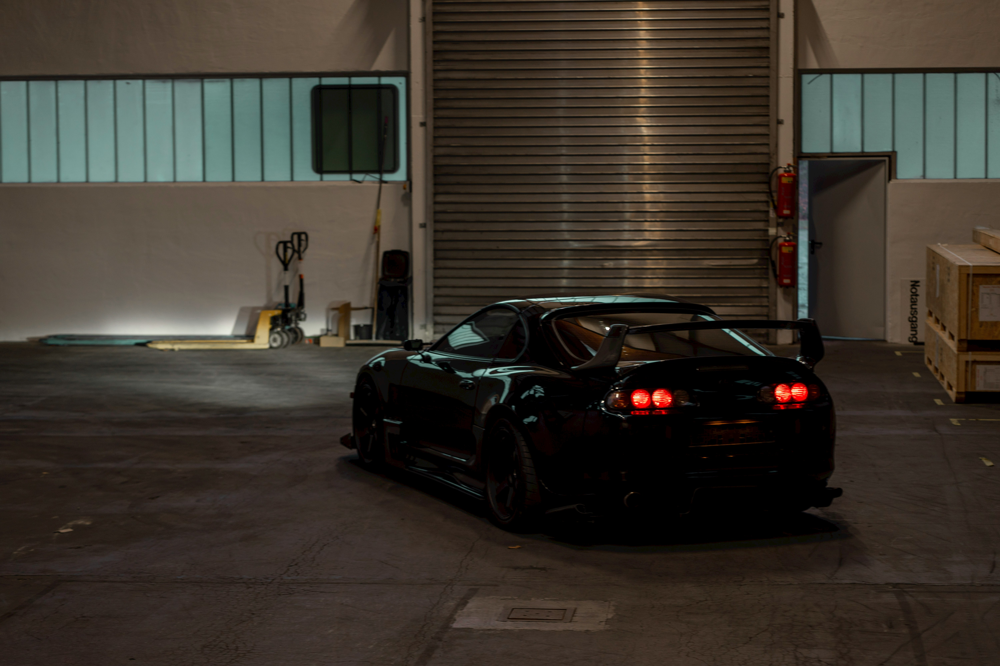

We are in our shop 3 days a week. Monday, Friday, and Saturday. Feel free to drop by if you have any questions or call us at (123) 456-7890. We would love to see your car and have the opportunity to tune it in the future.
We provide both a tuning service and a building service. We are experts when it comes to building and tuning cars so you can leave it to us. We have been building cars since the 90s and have grown with the cars and culture as they have grown throughout the years. There is no task that is too big or small for us to conquer. If you have any questions regarding our building services please contact Leroy at (098) 765-4321.
Meet our employees: Leroy has been building cars since he was 14 and has almost 40 years of experience working on cars. He is an expert when it comes to both foreign and domestic cars and has a knack for the older variety. He enjoys most cars and loves to build and race them. Leroy has also been tuning cars since the early 2000s. He has extensive knowledge of how to tune Hondas and Subarus. Landon is our new employee. He has been building cars since he was 15 years old and loves to work on Subarus. He also has extensive knowledge of Honda, Ford, and VW. He has recently come to work as a resident tuner and is an expert when it comes to tuning Subarus. If you would like to get in contact with either of them please contact (123) 456-7890.
